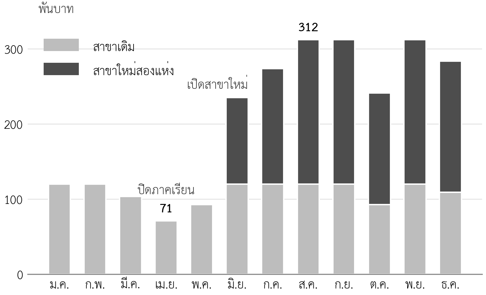

บทที่ 7 แผนการตลาดและประมาณการยอดขาย
เมื่อศึกษาบทนี้จบแล้ว นิสิตสามารถ
- ประยุกต์ใช้ STP แบ่งส่วนตลาดและกำหนดตลาดเป้าหมายของกลุ่ม และเชื่อมกับข้อความระบุตำแหน่งได้
- กำหนดส่วนประสมทางการตลาดที่สอดคล้องกับตำแหน่งทางการตลาดได้
- ตั้งราคาโดยพิจารณาต้นทุน คู่แข่ง และคุณค่าที่ลูกค้าได้รับ และคำนวณส่วนเกินต่อหน่วยได้
- กำหนดช่องทางตามเส้นทางของลูกค้าห้าระยะได้
- จัดทำตารางกิจกรรมส่งเสริมการตลาดพร้อมงบประมาณและตัวชี้วัดได้
- ประมาณการยอดขายรายเดือนจากล่างขึ้นบน โดยรวมฤดูกาลและการไต่ระดับของสาขาใหม่ และเทียบกับขนาดตลาดได้
- อธิบายว่าแผนการตลาดเปลี่ยนอย่างไรตามระยะของเส้นทางสู่เป้าหมายได้
- จัดทำแผนการตลาดและประมาณการยอดขายของกลุ่มได้ (ใบงานที่ 5)
ความนำ
บทที่ 6 กำหนดว่าธุรกิจจะไปที่ไหนและจะชนะคู่แข่งด้วยอะไร แต่กลยุทธ์จะไม่เกิดผลจนกว่าจะถูกแปลงเป็นการตัดสินใจที่ลูกค้าสัมผัสได้ คือสินค้าแบบใด ราคาเท่าใด ซื้อได้ที่ไหน และรู้จักธุรกิจได้อย่างไร การตัดสินใจเหล่านี้รวมกันคือแผนการตลาด ซึ่งเป็นขั้นตอนที่สี่ของกระบวนการจัดทำแผน (ภาพที่ 1.1) และให้ผลลัพธ์ที่สำคัญที่สุดสำหรับส่วนที่เหลือของแผน คือประมาณการยอดขาย
ประมาณการยอดขายเป็นตัวเลขแรกของแผนการเงิน ทุกตัวเลขที่ตามมา ทั้งต้นทุนวัตถุดิบ กำลังการผลิต กระแสเงินสด และความสามารถชำระหนี้ ล้วนคำนวณจากยอดขาย ถ้ายอดขายสูงเกินจริง แผนทั้งเล่มจะสูงเกินจริงตามไปด้วย บทนี้จึงเริ่มจากการเลือกตลาดเป้าหมายและส่วนประสมทางการตลาด การตั้งราคา ช่องทาง และการส่งเสริมการตลาด แล้วจบด้วยการประมาณการยอดขายรายเดือนอย่างเป็นระบบ ซึ่งเชื่อมกับขนาดตลาดในบทที่ 4 และด่านตรวจในบทที่ 6
7.1 จากตำแหน่งทางการตลาดสู่แผนการตลาด
แผนการตลาด (marketing plan) คือชุดการตัดสินใจว่าธุรกิจจะสร้าง สื่อสาร และส่งมอบคุณค่าให้ลูกค้าเป้าหมายอย่างไร แผนการตลาดที่ดีเริ่มจากข้อความระบุตำแหน่งในบทที่ 5 เสมอ ทุกการตัดสินใจในแผนต้องตอบได้ว่าช่วยให้ลูกค้าเห็นธุรกิจตามตำแหน่งนั้นหรือไม่ ถ้าตำแหน่งคือ "ชุดอาหารเช้าสั่งล่วงหน้าสำหรับสำนักงาน" แต่แผนใช้งบส่วนใหญ่ทำโปรโมชันลดราคาให้นักเรียน แผนการตลาดก็ขัดกับกลยุทธ์ของตนเอง
ความสอดคล้องนี้ตรวจได้ด้วยคำถามง่าย ๆ สามข้อ ข้อแรก ลูกค้าเป้าหมายของแผนการตลาดเป็นกลุ่มเดียวกับในข้อความระบุตำแหน่งหรือไม่ ข้อที่สอง สิ่งที่ทำให้แตกต่างจากคู่แข่งปรากฏในตัวสินค้า ราคา ช่องทาง และการสื่อสารหรือไม่ ข้อที่สาม งบประมาณส่วนใหญ่ไปอยู่กับลูกค้าเป้าหมายหลักหรือไม่ แผนที่ตอบว่าใช่ทั้งสามข้อคือแผนที่สอดคล้องกับกลยุทธ์
7.2 การแบ่งส่วน การเลือกตลาดเป้าหมาย และการวางตำแหน่ง
7.2.1 กระบวนการ STP
การตลาดยุคใหม่ใช้กระบวนการสามขั้นที่เรียกว่า STP ได้แก่ การแบ่งส่วนตลาด (segmentation) การเลือกตลาดเป้าหมาย (targeting) และการวางตำแหน่ง (positioning) (Kotler & Keller, 2016) นิสิตได้ทำส่วนสำคัญของ STP ไปแล้วในบทก่อน ๆ การแยกกลุ่มลูกค้าในบทที่ 2 คือการแบ่งส่วนตลาด และข้อความระบุตำแหน่งในบทที่ 5 คือการวางตำแหน่ง บทนี้จึงเน้นการเลือกตลาดเป้าหมาย ซึ่งเป็นการตัดสินใจว่าจะใช้ทรัพยากรที่มีจำกัดกับลูกค้ากลุ่มใดก่อน
ตารางที่ 7.1 ตัวแปรที่ใช้แบ่งส่วนตลาด
| ตัวแปร | ตัวอย่าง | ตัวอย่างในกรณีศึกษา |
|---|---|---|
| ภูมิศาสตร์ | จังหวัด อำเภอ รัศมีจากร้าน | ผู้ที่อยู่หรือทำงานในรัศมีที่เดินถึงโรงเรียน |
| ประชากรศาสตร์ | อายุ อาชีพ รายได้ | นักเรียนมัธยม คนทำงานสำนักงาน |
| พฤติกรรม | ความถี่ ปริมาณที่ซื้อ ช่องทางที่ใช้ | ซื้อรายไม้หน้าร้าน กับสั่งเป็นชุดให้ทั้งสำนักงาน |
| ความต้องการหรืองานที่ต้องการให้สำเร็จ | สิ่งที่ลูกค้าพยายามทำ | กินมื้อเช้าระหว่างทาง กับซื้อให้ทุกคนในทีมก่อนเข้างาน |
7.2.2 เลือกตลาดเป้าหมาย
การเลือกตลาดเป้าหมายใช้เกณฑ์สามข้อ ข้อแรก ขนาดและการเติบโต กลุ่มนั้นใหญ่พอให้ธุรกิจอยู่รอดหรือไม่ ข้อที่สอง ความน่าสนใจ กลุ่มนั้นมีกำไรต่อหน่วยดีและมีคู่แข่งน้อยพอหรือไม่ ข้อที่สาม ความเหมาะกับธุรกิจ ธุรกิจมีจุดแข็งที่ตอบความต้องการของกลุ่มนั้นได้ดีกว่าคู่แข่งหรือไม่ ตารางที่ 7.2 ประเมินลูกค้าสองกลุ่มของกรณีศึกษาด้วยเกณฑ์นี้
ตารางที่ 7.2 ประเมินลูกค้าสองกลุ่มเพื่อเลือกตลาดเป้าหมาย (กรณีศึกษาสมมติ)
| เกณฑ์ | นักเรียน | คนทำงานที่สั่งให้สำนักงาน |
|---|---|---|
| ขนาด | ใหญ่กว่า (นักเรียนประมาณร้อยละ 40 ซื้ออาหารเช้านอกบ้าน) | เล็กกว่า แต่สั่งครั้งละหลายชุด |
| กำไรต่อครั้งที่ซื้อ | ต่ำ ซื้อครั้งละหนึ่งถึงสองไม้ | สูงกว่า ออเดอร์ละ 4–12 ชุด |
| คู่แข่ง | มาก รวมร้านสะดวกซื้อและโรงอาหาร | น้อย คู่แข่งรายย่อยไม่รับสั่งกลุ่ม |
| ความเหมาะกับจุดแข็งของร้าน | ปานกลาง แข่งราคาได้ยาก | สูง ตรงกับจุดแข็งเรื่องสั่งกลุ่มได้ครบ |
| ข้อสรุป | ตลาดรอง รักษาไว้ด้วยรสชาติและความเร็ว | ตลาดเป้าหมายหลักของการเติบโต |
การเลือกตลาดเป้าหมายหลักไม่ได้แปลว่าทิ้งกลุ่มอื่น นักเรียนยังเป็นลูกค้าส่วนใหญ่ของร้าน แต่การลงทุนด้านการตลาดเพิ่มเติม เช่น งบประมาณและเวลาของคุณตั้ม จะไปอยู่กับกลุ่มคนทำงานก่อน เพราะเป็นกลุ่มที่ร้านชนะคู่แข่งได้ชัดที่สุด ตามผลการวิเคราะห์ในบทที่ 5
7.3 ส่วนประสมทางการตลาด
ส่วนประสมทางการตลาด (marketing mix) คือเครื่องมือที่ธุรกิจควบคุมได้ในการส่งมอบคุณค่าให้ลูกค้าเป้าหมาย McCarthy (1960) จัดเครื่องมือนี้เป็นสี่กลุ่มที่รู้จักกันในชื่อ 4P ได้แก่ สินค้า (product) ราคา (price) ช่องทางจัดจำหน่าย (place) และการส่งเสริมการตลาด (promotion) ต่อมา Booms และ Bitner (1981) เสนอให้เพิ่มอีกสามองค์ประกอบสำหรับธุรกิจบริการ ได้แก่ บุคลากร (people) กระบวนการ (process) และหลักฐานทางกายภาพ (physical evidence) รวมเป็น 7P ร้านอาหารมีลักษณะของธุรกิจบริการ จึงควรพิจารณาครบทั้งเจ็ดองค์ประกอบ
ตารางที่ 7.3 ส่วนประสมทางการตลาด 7P ของหมูปิ้งอาจารย์ตั้ม ระยะที่ 1 (กรณีศึกษาสมมติ)
| องค์ประกอบ | คำถามหลัก | การตัดสินใจของร้าน | สอดคล้องกับตำแหน่งอย่างไร |
|---|---|---|---|
| สินค้า | ขายอะไร ในรูปแบบใด | ชุดอาหารเช้า หมู 3 ไม้กับข้าวเหนียว แพ็กแยกพร้อมชื่อผู้สั่ง | แพ็กพร้อมชื่อตอบปัญหาจำรายการผิด |
| ราคา | ราคาเท่าใด มีส่วนลดอย่างไร | ชุดละ 40 บาท ออเดอร์กลุ่ม 10 ชุดขึ้นไปชุดละ 38 บาท | ส่วนลดตามปริมาณจูงใจให้สั่งทั้งสำนักงาน |
| ช่องทาง | ลูกค้าซื้อและรับที่ไหน | หน้าร้านสามสาขา สั่งล่วงหน้าทาง LINE รับที่ร้าน | LINE ทำให้สั่งครั้งเดียวได้ครบ |
| การส่งเสริมการตลาด | ลูกค้ารู้จักได้อย่างไร | แจกชิมที่สำนักงานรอบโรงเรียน คูปองแนะนำสำนักงาน | สื่อสารกับคนทำงานโดยตรง |
| บุคลากร | ใครให้บริการ ต้องมีทักษะอะไร | พนักงานที่ฝึกขั้นตอนมาตรฐานการปิ้งและการจัดออเดอร์ | ออเดอร์กลุ่มต้องถูกต้องทุกห่อ |
| กระบวนการ | ลูกค้าได้รับบริการอย่างไร | รับออเดอร์ถึง 20.00 น. คืนก่อน จัดพร้อมรับ 06.30 น. | รับได้ทันทีไม่ต้องต่อคิว |
| หลักฐานทางกายภาพ | ลูกค้าเห็นอะไรที่ยืนยันคุณภาพ | ป้ายร้าน เตาที่สะอาดและมองเห็นได้ ถุงที่มีชื่อร้าน | ยืนยันคุณค่า "สะอาด มาตรฐานเดียวกัน" |
7.4 การตั้งราคา
7.4.1 สามแนวทางของการตั้งราคา
ราคาเป็นองค์ประกอบเดียวของส่วนประสมทางการตลาดที่สร้างรายได้โดยตรง และเป็นตัวเลขที่ส่งผลต่อแผนการเงินมากที่สุด การตั้งราคามีสามแนวทางที่ควรพิจารณาร่วมกัน (ตารางที่ 7.4) ราคาที่ตั้งต้องอยู่สูงกว่าต้นทุนผันแปรต่อหน่วยเสมอ อยู่ในช่วงที่ลูกค้ายอมรับเมื่อเทียบกับทางเลือกอื่น และไม่ต่ำจนขัดกับตำแหน่งทางการตลาด
ตารางที่ 7.4 แนวทางการตั้งราคาและการใช้กับกรณีศึกษา (กรณีศึกษาสมมติ)
| แนวทาง | หลักคิด | ข้อมูลที่ต้องใช้ | กรณีศึกษา |
|---|---|---|---|
| ตามต้นทุน | ราคาต้องสูงกว่าต้นทุนและมีส่วนเกินพอ | ต้นทุนผันแปรต่อหน่วย | ต้นทุนผันแปรต่อชุด 20.50 บาท ราคาต่ำสุดที่ไม่ขาดทุนต่อชุดคือ 20.50 บาท |
| ตามคู่แข่ง | ราคาต้องอยู่ในช่วงที่ลูกค้าเทียบได้ | ราคาของทางเลือกอื่น (บทที่ 5) | ทางเลือกอยู่ระหว่าง 30–40 บาท (ตารางที่ 5.3) |
| ตามคุณค่า | ราคาสะท้อนคุณค่าที่ลูกค้าได้รับ | สิ่งที่ลูกค้าประหยัดได้หรือได้เพิ่ม | คนทำงานไม่ต้องต่อคิวและไม่ต้องจำรายการ ยอมรับราคาเท่ากับร้านอื่นได้ แม้ไม่ใช่ราคาถูกสุด |
7.4.2 ส่วนเกินต่อหน่วย
ตัวเลขที่ต้องคำนวณทุกครั้งที่ตั้งราคาคือส่วนเกินต่อหน่วย (contribution margin per unit) ซึ่งเท่ากับราคาขายหักต้นทุนผันแปรต่อหน่วย ส่วนเกินนี้คือเงินที่แต่ละหน่วยนำไปจ่ายต้นทุนคงที่และเป็นกำไร ชุดอาหารเช้าของร้านมีต้นทุนผันแปรเท่ากับหมู 3 ไม้ ไม้ละ 5.50 บาท บวกข้าวเหนียว 4.00 บาท รวม 20.50 บาท เมื่อขายชุดละ 40 บาท จะมีส่วนเกิน 19.50 บาทต่อชุด หรือร้อยละ 48.75 ของราคา ส่วนออเดอร์กลุ่มที่ขายชุดละ 38 บาท มีส่วนเกิน 17.50 บาทต่อชุด ส่วนลดสองบาทจึงลดส่วนเกินต่อชุดลงประมาณร้อยละ 10 ซึ่งคุ้มค่าถ้าทำให้ได้ออเดอร์ที่ใหญ่ขึ้นและสั่งซ้ำ บทที่ 10 จะใช้ส่วนเกินต่อหน่วยคำนวณจุดคุ้มทุน
ตารางที่ 7.5 ส่วนเกินต่อชุดตามราคา (กรณีศึกษาสมมติ)
| ราคาต่อชุด | ต้นทุนผันแปรต่อชุด | ส่วนเกินต่อชุด | ร้อยละของราคา | ใช้กับ |
|---|---|---|---|---|
| 40 บาท | 20.50 บาท | 19.50 บาท | 48.75 | ราคาปกติ |
| 38 บาท | 20.50 บาท | 17.50 บาท | 46.05 | ออเดอร์กลุ่ม 10 ชุดขึ้นไป |
| 34 บาท | 20.50 บาท | 13.50 บาท | 39.71 | ถ้าลดราคาเท่าร้านป้า ข. (ไม่เลือก) |
แถวสุดท้ายแสดงว่าถ้าร้านลดราคาลงเท่าคู่แข่งที่ถูกที่สุด ส่วนเกินต่อชุดจะลดลงประมาณร้อยละ 31 ซึ่งต้องขายเพิ่มอีกมากจึงจะได้ส่วนเกินรวมเท่าเดิม และยังขัดกับกลยุทธ์ที่ไม่แข่งด้านราคา ตารางนี้จึงเป็นหลักฐานประกอบการตัดสินใจไม่ลดราคาในบทที่ 5
ตัวเลขในหัวข้อนี้ใช้ต้นทุนปัจจุบันไม้ละ 5.50 บาท และยังไม่หักภาษีมูลค่าเพิ่ม เพราะเป็นการตัดสินใจเรื่องราคาก่อนขยาย เมื่อมีครัวกลาง ต้นทุนจะลดเป็นไม้ละ 5.19 บาท (บทที่ 8) และเมื่อร้านจดทะเบียนภาษีมูลค่าเพิ่ม รายได้สุทธิต่อชุดจะลดลง (บทที่ 9) บทที่ 10 จึงคำนวณส่วนเกินต่อหน่วยใหม่ด้วยตัวเลขทั้งสอง ข้อสรุปเรื่องไม่ลดราคายังเหมือนเดิม
7.4.3 ส่วนลดต้องแลกด้วยยอดขายเท่าใด
ส่วนลดทุกบาทถูกหักออกจากส่วนเกินต่อหน่วยทั้งบาท ไม่ได้หักจากราคา ร้านที่ให้ส่วนลดจึงต้องขายเพิ่มจนส่วนเกินรวมกลับมาเท่าเดิม สัดส่วนที่ต้องขายเพิ่มคำนวณได้จากส่วนเกินเดิมหารด้วยส่วนเกินหลังให้ส่วนลด แล้วลบด้วยหนึ่ง ตารางที่ 7.6 แสดงว่าส่วนลดที่ดูเล็กน้อยเมื่อเทียบกับราคากลับต้องแลกด้วยยอดขายที่เพิ่มขึ้นมาก ส่วนลด 2 บาท หรือร้อยละ 5 ของราคา ต้องขายเพิ่มร้อยละ 11.4 ส่วนลด 6 บาท หรือร้อยละ 15 ของราคา ต้องขายเพิ่มร้อยละ 44.4
ตารางที่ 7.6 ยอดขายที่ต้องเพิ่มเพื่อชดเชยส่วนลด (กรณีศึกษาสมมติ)
| ส่วนลดต่อชุด | ราคาหลังลด | ส่วนเกินต่อชุด | ต้องขายเพิ่มเพื่อให้ส่วนเกินรวมเท่าเดิม |
|---|---|---|---|
| ไม่มี | 40 บาท | 19.50 บาท | – |
| 2 บาท | 38 บาท | 17.50 บาท | ร้อยละ 11.4 |
| 4 บาท | 36 บาท | 15.50 บาท | ร้อยละ 25.8 |
| 6 บาท | 34 บาท | 13.50 บาท | ร้อยละ 44.4 |
ตารางนี้ช่วยตัดสินว่าส่วนลดออเดอร์กลุ่มคุ้มหรือไม่ ร้านให้ส่วนลด 2 บาทเฉพาะออเดอร์ตั้งแต่ 10 ชุดขึ้นไป ซึ่งสูงกว่าออเดอร์ทั่วไปของสำนักงานที่อยู่ระหว่าง 4–12 ชุด สำนักงานที่เคยสั่ง 8 ชุดจึงต้องเพิ่มเป็นอย่างน้อย 10 ชุดเพื่อรับส่วนลด หรือเพิ่มขึ้นร้อยละ 25 ซึ่งมากกว่าร้อยละ 11.4 ที่ต้องการ ส่วนลดนี้จึงคุ้มเมื่อจูงใจให้สั่งเพิ่มได้จริง แต่ไม่คุ้มถ้าให้กับสำนักงานที่สั่ง 10 ชุดขึ้นไปอยู่แล้ว ร้านจึงควรติดตามขนาดออเดอร์ของแต่ละสำนักงานก่อนและหลังให้ส่วนลด หลักเดียวกันใช้ได้กับโปรโมชันทุกแบบ ก่อนลดราคา ให้คำนวณก่อนเสมอว่าต้องขายเพิ่มเท่าใด และมีหลักฐานใดว่าจะขายเพิ่มได้ถึงระดับนั้น
7.5 ช่องทางและเส้นทางของลูกค้า
ช่องทางในแผนการตลาดต้องครอบคลุมทั้งห้าระยะที่ลูกค้าพบธุรกิจ ตั้งแต่การรับรู้ การประเมิน การซื้อ การส่งมอบ และหลังการขาย (บทที่ 2) ลูกค้าแต่ละกลุ่มเดินเส้นทางต่างกัน แผนจึงควรเขียนแยกตามกลุ่ม ตารางที่ 7.7 แสดงเส้นทางของลูกค้ากลุ่มคนทำงาน ซึ่งเป็นตลาดเป้าหมายหลัก
ตารางที่ 7.7 เส้นทางของลูกค้ากลุ่มคนทำงานและช่องทางในแต่ละระยะ (กรณีศึกษาสมมติ)
| ระยะ | สิ่งที่ลูกค้าทำ | ช่องทางที่ร้านใช้ | ตัวชี้วัด |
|---|---|---|---|
| รับรู้ | เห็นร้านหรือได้ยินจากเพื่อนร่วมงาน | แจกชิมที่สำนักงาน ใบปลิวพร้อมคิวอาร์โค้ด | จำนวนสำนักงานที่ได้ชิม |
| ประเมิน | เทียบกับวิธีเดิม | ข้อความใน LINE แสดงเมนู ราคา และเวลารับ | จำนวนผู้เพิ่มเพื่อนใน LINE |
| ซื้อ | สั่งรายการของทุกคน | แบบฟอร์มสั่งใน LINE แยกรายการต่อคน | จำนวนออเดอร์ครั้งแรก |
| ส่งมอบ | รับชุดอาหารที่ร้าน | จุดรับออเดอร์แยกจากคิวหน้าร้าน | เวลารอรับ ความถูกต้องของออเดอร์ |
| หลังการขาย | สั่งซ้ำหรือเลิก | ข้อความเตือนสั่งล่วงหน้า สะสมแต้ม | อัตราการสั่งซ้ำภายในหนึ่งเดือน |
การเก็บข้อมูลลูกค้าผ่าน LINE เช่น ชื่อผู้สั่งและชื่อสำนักงาน เป็นการเก็บข้อมูลส่วนบุคคล ร้านจึงต้องแจ้งวัตถุประสงค์ ใช้ข้อมูลเฉพาะเพื่อรับออเดอร์และแจ้งข่าวสารที่ลูกค้ายินยอม และไม่ส่งต่อให้ผู้อื่น ตามหลักในบทที่ 3
7.6 การส่งเสริมการตลาดและงบประมาณ
7.6.1 วัตถุประสงค์และกิจกรรม
กิจกรรมส่งเสริมการตลาดทุกกิจกรรมต้องมีวัตถุประสงค์ที่วัดได้ และผูกกับระยะใดระยะหนึ่งของเส้นทางลูกค้า ถ้ากิจกรรมใดบอกไม่ได้ว่าช่วยให้ลูกค้าเดินจากระยะใดไปสู่ระยะใด กิจกรรมนั้นอาจไม่จำเป็น สำหรับธุรกิจขนาดเล็ก กิจกรรมที่ให้ผลดีที่สุดมักเป็นกิจกรรมที่ทำให้ลูกค้าได้ลองสินค้าจริงและชวนคนอื่นต่อ มากกว่าการโฆษณาในวงกว้าง
7.6.2 งบประมาณ
ตารางที่ 7.8 กิจกรรมและงบประมาณส่งเสริมการตลาด ระยะที่ 1 (กรณีศึกษาสมมติ)
| กิจกรรม | วัตถุประสงค์ | งบประมาณ | ตัวชี้วัด |
|---|---|---|---|
| แจกชิมที่สำนักงานรอบโรงเรียนใหม่ | รับรู้และประเมิน | 5,000 บาท | สำนักงานที่ได้ชิมไม่น้อยกว่า 40 แห่ง |
| ป้ายร้านและใบปลิวพร้อมคิวอาร์โค้ด | รับรู้ | 4,000 บาท | ผู้เพิ่มเพื่อนใน LINE ไม่น้อยกว่า 200 คน |
| คูปองแนะนำสำนักงาน | ซื้อและหลังการขาย | 6,000 บาท | สำนักงานใหม่จากการแนะนำไม่น้อยกว่า 15 แห่ง |
| รวมช่วงเปิดสาขา | 15,000 บาท | ||
| สื่อ LINE และสิ่งพิมพ์ต่อเนื่อง | หลังการขาย | 1,500 บาทต่อเดือน | อัตราการสั่งซ้ำไม่น้อยกว่าร้อยละ 70 |
งบประมาณในตารางนี้จะเป็นรายการค่าใช้จ่ายในแผนการเงินบทที่ 10 งบช่วงเปิดสาขาเป็นค่าใช้จ่ายครั้งเดียว ส่วนงบต่อเนื่องเป็นต้นทุนคงที่รายเดือน ตัวชี้วัดในคอลัมน์สุดท้ายเป็นเกณฑ์ที่ร้านใช้ตัดสินว่ากิจกรรมใดได้ผลและควรทำต่อ ซึ่งใช้หลักเดียวกับบัตรทดสอบในบทที่ 3
7.6.3 ติดตามผลด้วยต้นทุนต่อลูกค้าใหม่
ตัวชี้วัดในตารางที่ 7.8 บอกว่ากิจกรรมทำได้ตามเป้าหรือไม่ แต่ยังไม่บอกว่าคุ้มเงินหรือไม่ ตัวเลขที่ตอบคำถามนี้คือต้นทุนต่อลูกค้าใหม่ (customer acquisition cost) ซึ่งเท่ากับงบของกิจกรรมหารด้วยจำนวนลูกค้าใหม่ที่ได้จากกิจกรรมนั้น เมื่อนำไปเทียบกับส่วนเกินที่ลูกค้าหนึ่งรายสร้างต่อการสั่งหนึ่งครั้ง จะได้จำนวนครั้งที่ลูกค้าต้องสั่งก่อนที่กิจกรรมจะคืนทุน สำหรับกรณีศึกษา สมมติว่าสำนักงานสั่งครั้งละ 8 ชุดที่ราคาปกติ ส่วนเกินต่อครั้งเท่ากับ 8 คูณ 19.50 บาท หรือ 156 บาท (ตารางที่ 7.9)
ตารางที่ 7.9 ต้นทุนต่อลูกค้าใหม่และจำนวนครั้งที่ต้องสั่งก่อนคืนทุน (กรณีศึกษาสมมติ)
| กิจกรรม | งบประมาณ | สำนักงานใหม่ตามเป้า | ต้นทุนต่อสำนักงานใหม่ | ครั้งที่ต้องสั่งก่อนคืนทุน |
|---|---|---|---|---|
| แจกชิม | 5,000 บาท | 10 แห่ง (ร้อยละ 25 ของ 40 แห่งที่ได้ชิม) | 500 บาท | ประมาณ 3.2 ครั้ง |
| คูปองแนะนำสำนักงาน | 6,000 บาท | 15 แห่ง | 400 บาท | ประมาณ 2.6 ครั้ง |
ทั้งสองกิจกรรมคืนทุนภายในการสั่งสามถึงสี่ครั้ง ถ้าสำนักงานสั่งซ้ำเดือนละครั้งตามตัวชี้วัดอัตราการสั่งซ้ำ กิจกรรมจะคืนทุนภายในประมาณหนึ่งภาคเรียน ตัวเลขนี้ยังบอกว่าการสั่งซ้ำสำคัญกว่าการได้ลูกค้าใหม่ ถ้าสำนักงานสั่งเพียงครั้งเดียวแล้วหายไป ทุกกิจกรรมในตารางขาดทุน ส่วนป้ายร้านและใบปลิวยังคำนวณต้นทุนต่อลูกค้าใหม่ไม่ได้ เพราะวัดผลเป็นจำนวนผู้เพิ่มเพื่อนใน LINE ซึ่งคิดเป็นต้นทุน 20 บาทต่อคน ร้านต้องติดตามต่อว่าผู้เพิ่มเพื่อนกี่คนสั่งซื้อจริง ก่อนตัดสินว่าจะทำกิจกรรมนี้ซ้ำที่สาขาต่อไปหรือไม่
7.7 ประมาณการยอดขาย
7.7.1 ห่วงโซ่ของการประมาณการ
ประมาณการยอดขาย (sales forecast) ในแผนธุรกิจควรทำเป็นรายเดือนอย่างน้อย 12 เดือน และคำนวณจากล่างขึ้นบนด้วยห่วงโซ่ตัวคูณเดียวกับบทที่ 4 สำหรับร้านค้าปลีก ห่วงโซ่คือ ยอดขายฐานต่อวัน คูณจำนวนวันขาย คูณดัชนีฤดูกาล คูณอัตราไต่ระดับของสาขาใหม่ ตัวคูณสองตัวหลังเป็นสิ่งที่แผนของนิสิตมักขาด และเป็นเหตุผลหลักที่ทำให้ประมาณการสูงเกินจริงในช่วงแรก
ดัชนีฤดูกาล (seasonal index) ปรับยอดขายตามช่วงเวลาของปี ค่าเฉลี่ยของดัชนีทั้งปีเท่ากับ 1 เดือนที่มีดัชนีต่ำกว่า 1 คือเดือนที่ขายได้น้อยกว่าค่าเฉลี่ย ร้านหน้าโรงเรียนมีฤดูกาลชัดเจนตามภาคเรียน ส่วนอัตราไต่ระดับ (ramp-up rate) สะท้อนว่าสาขาใหม่ไม่ได้ขายเต็มที่ตั้งแต่วันแรก เพราะลูกค้ายังไม่รู้จัก สำหรับธุรกิจที่ดำเนินการอยู่ ดัชนีฤดูกาลหาได้จากข้อมูลยอดขายรายเดือนย้อนหลังของตนเอง ซึ่งเป็นข้อได้เปรียบสำคัญเหนือธุรกิจใหม่
ตารางที่ 7.10 ข้อสมมติของประมาณการยอดขาย ปี 2570 (กรณีศึกษาสมมติ)
| ข้อสมมติ | ค่า | ที่มา |
|---|---|---|
| ยอดขายสาขาเดิม | 109,200 บาทต่อเดือนโดยเฉลี่ย | สมุดบัญชีร้าน |
| ยอดขายฐานของสาขาใหม่ | 240 ไม้ต่อวัน หรือ 3,360 บาทต่อวัน หรือ 87,360 บาทต่อเดือน | เกณฑ์ด่าน 0 ต่ำกว่าผลขายทดลองจริง (255 และ 248 ไม้) เพื่อความระมัดระวัง |
| วันขาย | 26 วันต่อเดือน | สมุดบัญชีร้าน |
| เดือนที่เปิดสาขาใหม่ | มิถุนายน 2570 | ตรงกับการเปิดภาคเรียน |
| อัตราไต่ระดับ | เดือนแรกร้อยละ 60 เดือนที่สองร้อยละ 80 จากนั้นร้อยละ 100 | ข้อสมมติ ติดตามจริงหลังเปิด |
| ดัชนีฤดูกาล | ม.ค. 1.10 · ก.พ. 1.10 · มี.ค. 0.95 · เม.ย. 0.65 · พ.ค. 0.85 · มิ.ย.–ก.ย. 1.10 · ต.ค. 0.85 · พ.ย. 1.10 · ธ.ค. 1.00 | ข้อสมมติเพื่อการสอน ในแผนจริงคำนวณจากยอดขายรายเดือนสามปีของสาขาเดิม |
7.7.2 ประมาณการรายเดือน
ตารางที่ 7.11 ประมาณการยอดขายรายเดือน ปี 2570 (บาท กรณีศึกษาสมมติ)
| เดือน | ดัชนี | สาขาเดิม | สาขาใหม่สองแห่ง | รวม |
|---|---|---|---|---|
| ม.ค. | 1.10 | 120,120 | – | 120,120 |
| ก.พ. | 1.10 | 120,120 | – | 120,120 |
| มี.ค. | 0.95 | 103,740 | – | 103,740 |
| เม.ย. | 0.65 | 70,980 | – | 70,980 |
| พ.ค. | 0.85 | 92,820 | – | 92,820 |
| มิ.ย. | 1.10 | 120,120 | 115,315 | 235,435 |
| ก.ค. | 1.10 | 120,120 | 153,754 | 273,874 |
| ส.ค. | 1.10 | 120,120 | 192,192 | 312,312 |
| ก.ย. | 1.10 | 120,120 | 192,192 | 312,312 |
| ต.ค. | 0.85 | 92,820 | 148,512 | 241,332 |
| พ.ย. | 1.10 | 120,120 | 192,192 | 312,312 |
| ธ.ค. | 1.00 | 109,200 | 174,720 | 283,920 |
| รวม | 1,310,400 | 1,168,877 | 2,479,277 |
วิธีคำนวณสาขาใหม่ของเดือนมิถุนายน คือ 87,360 บาท คูณสองสาขา คูณดัชนี 1.10 คูณอัตราไต่ระดับ 0.6 ได้ 115,315 บาท เดือนอื่นใช้วิธีเดียวกัน ภาพที่ 7.1 แสดงตัวเลขเดียวกันเป็นกราฟ ซึ่งทำให้เห็นสองเรื่องที่ตารางซ่อนไว้ คือช่วงปิดภาคเรียนเดือนเมษายนที่ยอดขายต่ำที่สุดของปี และยอดขายที่เพิ่มขึ้นเป็นขั้นเมื่อสาขาใหม่ไต่ระดับ

7.7.3 ตรวจประมาณการกับขนาดตลาดและด่านตรวจ
ประมาณการยอดขายต้องผ่านการตรวจสามด้านก่อนนำไปใช้ในแผนการเงิน ด้านแรก ตรวจกับขนาดตลาด ยอดขายของปีที่ไม่มีช่วงไต่ระดับ คือปี 2571 เมื่อคำนวณด้วยวิธีเดียวกันได้ 3,407,040 บาท เท่ากับ SOM ฐานในบทที่ 4 พอดี แสดงว่าประมาณการสอดคล้องกับการวิเคราะห์ตลาด ด้านที่สอง ตรวจกับกำลังการผลิต ครัวกลางต้องหมักได้วันละประมาณ 858 ไม้ในเดือนที่ขายดีที่สุด คือ 780 ไม้ของสามสาขาคูณดัชนี 1.10 ซึ่งจะใช้ในแผนการดำเนินงานบทที่ 8 ด้านที่สาม ตรวจกับด่านตรวจ เป้าหมายระยะที่ 1 คือยอดขายเฉลี่ยวันละ 10,920 บาท ประมาณการของปี 2571 ให้ค่าเฉลี่ยเท่ากับเป้าหมายพอดี จึงไม่มีส่วนเผื่อ ถ้ายอดขายจริงต่ำกว่าประมาณการแม้เล็กน้อย ร้านจะไม่ผ่านด่าน 1 ข้อสังเกตนี้ควรเขียนไว้ในแผน และเป็นเหตุผลที่ต้องวิเคราะห์กรณีต่ำในบทที่ 11
ตารางที่ 7.12 ประมาณการยอดขายเป็นช่วงสามกรณี ปีเต็ม 2571 (กรณีศึกษาสมมติ)
| กรณี | ยอดขายสาขาใหม่เทียบสาขาเดิม | ยอดขายทั้งปี | เฉลี่ยต่อวัน (312 วัน) | เทียบเป้าระยะที่ 1 |
|---|---|---|---|---|
| ต่ำ | ร้อยละ 60 | 2,882,880 บาท | 9,240 บาท | ต่ำกว่าเป้า |
| ฐาน | ร้อยละ 80 | 3,407,040 บาท | 10,920 บาท | เท่ากับเป้า |
| สูง | ร้อยละ 100 | 3,931,200 บาท | 12,600 บาท | สูงกว่าเป้า |
7.7.4 ข้อผิดพลาดที่พบบ่อยในประมาณการยอดขาย
ประมาณการยอดขายในแผนธุรกิจของนิสิตมักผิดในรูปแบบที่คาดได้ ตารางที่ 7.13 รวบรวมข้อผิดพลาดที่พบบ่อยพร้อมวิธีตรวจและวิธีแก้ ซึ่งใช้เป็นรายการตรวจก่อนส่งใบงานที่ 5 ได้ ข้อผิดพลาดส่วนใหญ่มีต้นเหตุเดียวกัน คือเริ่มจากตัวเลขที่อยากได้แล้วหาเหตุผลมารองรับ แทนที่จะเริ่มจากหลักฐานแล้วคำนวณไปข้างหน้า
ตารางที่ 7.13 ข้อผิดพลาดที่พบบ่อยในประมาณการยอดขายและวิธีแก้
| ข้อผิดพลาด | สัญญาณที่ตรวจพบ | วิธีแก้ |
|---|---|---|
| คิดจากบนลงล่าง เช่น ได้ส่วนแบ่งตลาดร้อยละ 1 ของประเทศ | ไม่มีจำนวนลูกค้า จำนวนหน่วย หรือวันขาย | คำนวณจากล่างขึ้นบนด้วยห่วงโซ่ตัวคูณ (หัวข้อ 7.7.1) |
| ยอดขายเต็มตั้งแต่เดือนแรก | เดือนแรกเท่ากับเดือนที่สิบสอง | ใส่อัตราไต่ระดับ และบอกที่มา |
| ทุกเดือนขายเท่ากัน | ไม่มีดัชนีฤดูกาล | ใช้ข้อมูลย้อนหลังหรือปฏิทินของลูกค้า เช่น ภาคเรียน เทศกาล |
| โตทุกเดือนในอัตราเดียวกันโดยไม่มีเหตุผล | ยอดขายเพิ่มร้อยละ 10 ทุกเดือนตลอดปี | ผูกการเติบโตกับเหตุการณ์ เช่น เปิดสาขา กิจกรรมการตลาด |
| เกินขนาดตลาดหรือกำลังการผลิต | ยอดขายปีเต็มสูงกว่า SOM หรือสูงกว่าที่ผลิตได้ | ตรวจสามด้านตามหัวข้อ 7.7.3 |
| ตัวเลขเดียวไม่มีช่วง | มีเฉพาะกรณีฐาน | ทำสามกรณีพร้อมเหตุผลของแต่ละกรณี (ตารางที่ 7.12) |
| ตัวเลขในแต่ละส่วนของแผนไม่ตรงกัน | ยอดขายในแผนการตลาดต่างจากแผนการเงิน | ใช้ตารางประมาณการเดียวเป็นแหล่งของทุกส่วน |
7.8 การตลาดตามระยะของเส้นทางสู่เป้าหมาย
แผนการตลาดในบทนี้เป็นของระยะที่ 1 ซึ่งขายให้ผู้บริโภคโดยตรง เมื่อธุรกิจเดินไปสู่ระยะต่อไป ลูกค้าของการตลาดจะเปลี่ยนไปด้วย ในระยะที่ 2 ลูกค้าที่ร้านต้องหาคือผู้ซื้อแฟรนไชส์ ซึ่งตัดสินใจด้วยตัวเลขกำไรของร้านแฟรนไชส์ ไม่ใช่รสชาติของหมูปิ้งเพียงอย่างเดียว ในระยะที่ 3 ลูกค้าคือร้านค้าปลีกที่ตัดสินใจว่าจะให้พื้นที่บนชั้นวางหรือไม่ และครอบครัวที่ตัดสินใจซื้อหน้าชั้นวาง ซึ่งต้องใช้การตลาดแบบที่ร้านหมูปิ้งไม่เคยทำ (ตารางที่ 7.14)
ตารางที่ 7.14 แผนการตลาดที่เปลี่ยนไปตามระยะ (กรณีศึกษาสมมติ)
| ประเด็น | ระยะที่ 1 | ระยะที่ 2 | ระยะที่ 3 |
|---|---|---|---|
| ลูกค้าของการตลาด | นักเรียนและคนทำงาน | ผู้ซื้อแฟรนไชส์ | ร้านค้าปลีกและครอบครัว |
| สิ่งที่ต้องพิสูจน์ | รสชาติและความสะดวก | ร้านแฟรนไชส์มีกำไรจริง | สินค้าขายได้บนชั้นวางและซื้อซ้ำ |
| ช่องทางสื่อสารหลัก | หน้าร้าน LINE แจกชิม | งานแสดงแฟรนไชส์ กรณีศึกษาร้านนำร่อง | การเจรจากับผู้ซื้อของร้านค้าปลีก การจัดชิมหน้าชั้นวาง |
| ตัวชี้วัดหลัก | ยอดขายต่อวัน อัตราสั่งซ้ำ | จำนวนผู้สมัคร อัตราการปิดร้าน | ยอดขายต่อร้านต่อสัปดาห์ อัตราซื้อซ้ำ |
สำหรับด่าน 2 ในบทที่ 6 ซึ่งต้องขายทดลองหมูหมักแช่แข็งในร้านค้าปลีกท้องถิ่น บทนี้กำหนดเกณฑ์ผ่านว่า ขายทดลองในร้านค้าปลีกท้องถิ่น 10 ร้านเป็นเวลา 8 สัปดาห์ ต้องขายได้เฉลี่ยไม่น้อยกว่า 15 แพ็กต่อร้านต่อสัปดาห์ และผู้ซื้อซื้อซ้ำไม่น้อยกว่าร้อยละ 30 เมื่อนำเกณฑ์นี้ไปคิดย้อนกลับกับเป้าหมายระยะที่ 3 ซึ่งต้องขายวันละประมาณ 21,600 แพ็ก หรือสัปดาห์ละประมาณ 151,200 แพ็ก จะพบว่าต้องวางขายประมาณ 10,080 จุด ตัวเลขนี้บอกว่าระยะที่ 3 ต้องพึ่งเครือข่ายร้านค้าปลีกระดับประเทศ ซึ่งมีอำนาจต่อรองสูง (ตารางที่ 5.12) และเป็นอีกตัวอย่างที่การคิดย้อนกลับเปิดเผยความต้องการของวิธีการที่ตัวเป้าหมายไม่ได้บอก
7.9 จากแผนการตลาดสู่แผนธุรกิจ
ผลของบทนี้เป็นเนื้อหาของแผนธุรกิจส่วนที่ 6 (ตารางที่ 1.6) ซึ่งควรมีหกองค์ประกอบ ได้แก่ ตลาดเป้าหมายและเหตุผลที่เลือก ส่วนประสมทางการตลาดที่สอดคล้องกับตำแหน่ง การตั้งราคาพร้อมส่วนเกินต่อหน่วย ช่องทางตามเส้นทางของลูกค้า กิจกรรมส่งเสริมการตลาดพร้อมงบประมาณและตัวชี้วัด และประมาณการยอดขายรายเดือนพร้อมข้อสมมติทุกตัว
ประมาณการยอดขายเป็นจุดเชื่อมที่สำคัญที่สุดระหว่างแผนการตลาดกับส่วนที่เหลือของแผน แผนการดำเนินงานในบทที่ 8 ใช้ยอดขายกำหนดกำลังการผลิต แผนการเงินในบทที่ 10 และ 11 ใช้ยอดขายคำนวณรายได้ ต้นทุนวัตถุดิบ และกระแสเงินสด ตัวเลขทั้งหมดต้องมาจากตารางเดียวกัน ถ้าแก้ประมาณการยอดขายเมื่อใด ต้องแก้ทุกส่วนที่ใช้ตัวเลขนั้นด้วย (ข้อผิดพลาดที่ 5 ในตารางที่ 1.8)
หลังผ่านด่าน 0 และได้สินเชื่อ คุณตั้มตั้งใจเปิดสาขาใหม่ทันทีในเดือนมีนาคม 2570 เพื่อให้มีรายได้เร็วที่สุด แต่เมื่อทำประมาณการยอดขายรายเดือน คุณตั้มเห็นว่าเดือนมีนาคมถึงพฤษภาคมเป็นช่วงสอบปลายภาคและปิดภาคเรียน ดัชนีฤดูกาลอยู่ระหว่าง 0.65 ถึง 0.95 สาขาใหม่ที่ยังไต่ระดับจะเจอช่วงที่ลูกค้าน้อยที่สุดของปีพอดี
คุณตั้มจึงเลื่อนการเปิดสาขาเป็นเดือนมิถุนายน ซึ่งตรงกับเปิดภาคเรียน และใช้ช่วงเมษายนถึงพฤษภาคมสร้างครัวกลางและฝึกพนักงานแทน การเลื่อนนี้ทำให้ยอดขายปี 2570 ต่ำกว่าการเปิดในเดือนมีนาคม แต่ช่วงไต่ระดับของสาขาใหม่ตรงกับช่วงที่นักเรียนกลับมา ซึ่งลดความเสี่ยงที่สาขาใหม่จะดูเหมือนขายไม่ได้ในเดือนแรก และลดความเสี่ยงที่คุณตั้มจะตัดสินใจผิดจากข้อมูลช่วงปิดภาคเรียน
คุณตั้มยังพบว่าประมาณการฐานของปี 2571 เท่ากับเป้าหมายระยะที่ 1 พอดี ไม่มีส่วนเผื่อ คุณตั้มจึงจดไว้ว่าแผนการเงินในบทที่ 11 ต้องแสดงว่ากรณีต่ำ ซึ่งยอดขายเฉลี่ยวันละ 9,240 บาท ยังผ่อนสินเชื่อได้หรือไม่
คำถามชวนคิด ถ้าธนาคารให้สินเชื่อได้เร็วที่สุดในเดือนสิงหาคม 2570 คุณตั้มควรเปิดสาขาเมื่อใด และการเปลี่ยนนี้กระทบตารางใดบ้างในบทนี้
เมื่อศึกษาบทนี้แล้ว นิสิตสามารถแปลงกลยุทธ์และข้อความระบุตำแหน่งเป็นแผนการตลาดที่สอดคล้องกัน ตั้งแต่การเลือกตลาดเป้าหมายด้วยเกณฑ์ที่ชัดเจน การกำหนดส่วนประสมทางการตลาดทั้งเจ็ดองค์ประกอบ การตั้งราคาที่พิจารณาต้นทุน คู่แข่ง และคุณค่า พร้อมคำนวณส่วนเกินต่อหน่วย ไปจนถึงการออกแบบช่องทางตามเส้นทางของลูกค้า และการวางงบประมาณส่งเสริมการตลาดที่มีตัวชี้วัด นิสิตยังประมาณการยอดขายรายเดือนจากล่างขึ้นบน โดยรวมฤดูกาลและการไต่ระดับ และตรวจกับขนาดตลาด กำลังการผลิต และด่านตรวจ
นิสิตนำความรู้นี้ไปใช้ทันทีในใบงานที่ 5 และในการนำเสนอครั้งที่ 1 ในสัปดาห์ที่ 8 ประมาณการยอดขายที่ได้จะเป็นฐานของครึ่งหลังของรายวิชา บทที่ 8 จะใช้ยอดขายนี้กำหนดกำลังการผลิตและกระบวนการดำเนินงาน และบทที่ 10 จะใช้คำนวณจุดคุ้มทุนและงบการเงิน
- แผนการตลาด (marketing plan)
- STP (segmentation, targeting, positioning)
- ส่วนประสมทางการตลาด 4P และ 7P (marketing mix)
- ส่วนเกินต่อหน่วย (contribution margin per unit)
- ต้นทุนต่อลูกค้าใหม่ (customer acquisition cost)
- ประมาณการยอดขาย (sales forecast)
- ดัชนีฤดูกาล (seasonal index)
- อัตราไต่ระดับ (ramp-up rate)
คำถามทบทวน
- จงตรวจความสอดคล้องระหว่างข้อความระบุตำแหน่งกับแผนการตลาดด้วยคำถามสามข้อในหัวข้อ 7.1 โดยใช้ธุรกิจที่นิสิตรู้จัก
- เกณฑ์สามข้อในการเลือกตลาดเป้าหมายคืออะไร และเพราะเหตุใดร้านจึงเลือกคนทำงานเป็นตลาดเป้าหมายหลัก ทั้งที่นักเรียนมีจำนวนมากกว่า
- องค์ประกอบสามข้อที่ Booms และ Bitner (1981) เพิ่มจาก 4P คืออะไร และสำคัญต่อร้านอาหารอย่างไร
- ร้านขายชุดอาหารเช้าชุดละ 45 บาท ต้นทุนผันแปรต่อชุด 22 บาท จงคำนวณส่วนเกินต่อชุดและร้อยละของราคา
- จากตารางที่ 7.5 เพราะเหตุใดการลดราคาเท่าคู่แข่งที่ถูกที่สุดจึงไม่ใช่ทางเลือกที่ดีของร้าน
- จงออกแบบเส้นทางของลูกค้าห้าระยะสำหรับลูกค้ากลุ่มนักเรียน และระบุตัวชี้วัดของแต่ละระยะ
- ดัชนีฤดูกาลและอัตราไต่ระดับคืออะไร และถ้าไม่ใส่ในประมาณการ จะเกิดผลอย่างไรกับแผนการเงิน
- จงคำนวณยอดขายสาขาใหม่สองแห่งของเดือนกรกฎาคม 2570 ตามข้อสมมติในตารางที่ 7.10 และแสดงวิธีทำ
- ประมาณการยอดขายต้องตรวจกับอะไรบ้างก่อนนำไปใช้ในแผนการเงิน
- เพราะเหตุใดการคิดย้อนกลับจากเกณฑ์ขายทดลอง 15 แพ็กต่อร้านต่อสัปดาห์จึงเปลี่ยนมุมมองต่อระยะที่ 3
ใบงานที่ 5 แผนการตลาดและประมาณการยอดขาย
ให้แต่ละกลุ่มจัดทำและส่งก่อนการนำเสนอครั้งที่ 1 ในสัปดาห์ที่ 8
- ตารางประเมินกลุ่มลูกค้าเพื่อเลือกตลาดเป้าหมายหลัก (แบบตารางที่ 7.2)
- ส่วนประสมทางการตลาด 7P พร้อมคอลัมน์ความสอดคล้องกับข้อความระบุตำแหน่ง (แบบตารางที่ 7.3)
- การตั้งราคาตามสามแนวทาง และตารางส่วนเกินต่อหน่วยของสินค้าหลัก
- เส้นทางของลูกค้าห้าระยะของตลาดเป้าหมายหลัก พร้อมช่องทางและตัวชี้วัด
- กิจกรรมส่งเสริมการตลาดพร้อมงบประมาณ ตัวชี้วัด และต้นทุนต่อลูกค้าใหม่
- ประมาณการยอดขายรายเดือน 12 เดือน พร้อมตารางข้อสมมติ ดัชนีฤดูกาล และอัตราไต่ระดับ (ถ้ามี)
- การตรวจประมาณการกับ SOM จากใบงานที่ 4 และกับเป้าหมายระยะแรก พร้อมประมาณการสามกรณี
เอกสารอ้างอิง
วราวุฒิ นาคบุญนำ. (2569). บทที่ 7 แผนการตลาดและประมาณการยอดขาย. ใน การวางแผนธุรกิจและพัฒนาธุรกิจสำหรับผู้ประกอบการ: เอกสารประกอบการสอนรายวิชา 0903521. คณะการบัญชีและการจัดการ มหาวิทยาลัยมหาสารคาม. https://aj-warawut.github.io/academic-web-teaching/bp_lesson_07.html